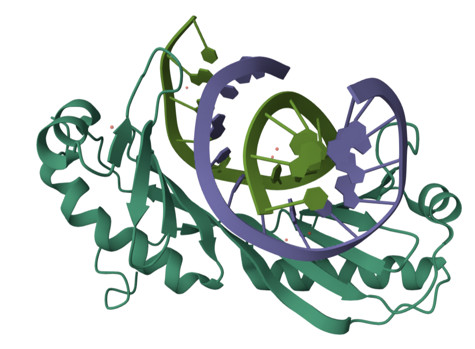

DNA mutagenesis driven by transcription factor competition with mismatch repair
Zhu et al.

Gordân LabOur work
Selected publications from the Gordân Lab. A complete, verified bibliography and publication links will be added before launch.
Zhu et al.
Horton et al.
Mielko et al.
Authors and citation details to be added.